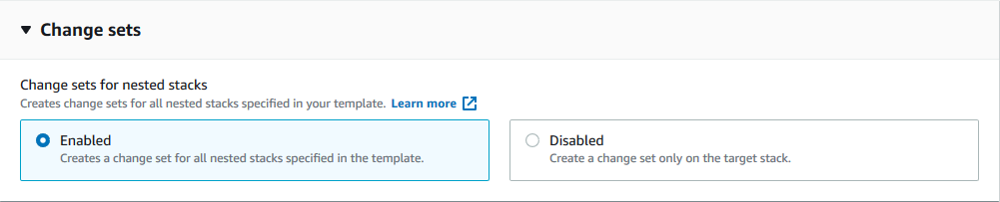

嵌套堆栈的更改集
使用嵌套堆栈的更改集，您可以预览整个嵌套堆栈层次结构中应用程序和基础架构资源的更改，并在确认所有更改均是预期更改后继续进行更新。
有关嵌套堆栈的更改集的更多详细信息，请参阅以下各节：
更改集和嵌套堆栈概述
嵌套堆栈的更改集将以下功能组合在一起，以扩大对整个堆栈层次结构作出的更改的预览范围：
-
更改集是一种 CloudFormation 功能，提供了对堆栈的建议更改将会对现有或新创建资源带来的影响的预览。创建更改集时，CloudFormation 通过将堆栈与您提交的资源更改进行比较，提供建议更改列表。有关更改集的详细信息，请参阅使用更改集更新堆栈。
-
嵌套堆栈是作为其他堆栈的一部分来创建的堆栈。要创建嵌套堆栈，请在模板的
Resource部分中指定 AWS::CloudFormation::Stack 资源。例如，在一个嵌套堆栈中可能具有与联网和安全相关的资源，而在另一个嵌套堆栈中具有应用程序资源。以这种方式对应用程序模型进行分区有助于提高代码的可维护性和重复使用。有关嵌套堆栈的更多信息，请参阅使用嵌套堆栈。
使用嵌套堆栈的更改集（控制台）
-
创建更改集 – 通过从堆栈层次结构任何级别提交更改来创建更改集。您可以提交修改后的堆栈模板或修改后的输入参数值，CloudFormation 会比较嵌套堆栈与您为生成更改集而提交的更改。默认情况下，CloudFormation 控制台中的嵌套堆栈的更改集为已启用状态。有关更多信息，请参阅创建更改集。
注意
根更改集是指与从中创建更改集的整个层次结构的堆栈关联的更改集。必须从根更改集中执行或删除嵌套堆栈的更改集。
-
查看更改集 – 在执行嵌套堆栈内资源的更改之前，可视化查看这些更改。您可以导航到当前堆栈及其嵌套更改集，在更改集的更改部分查看建议更改。有关详细信息，请参阅查看更改集。
-
执行更改集 – 执行与当前堆栈及其子代相关的更改集中所述的更改。执行操作必须从根更改集进行。有关详细信息，请参阅执行更改集。
-
删除更改集 – 从当前堆栈中删除更改集。删除更改集有助于防止您或其他用户意外启动不应该应用的更改集。删除操作必须从根更改集中执行。有关更多信息，请参阅删除更改集。
使用嵌套堆栈的更改集 (AWS CLI)
-
create-change-set- 默认情况下，未对 AWS CLI 启用嵌套堆栈的更改集。要为整个堆栈层次结构创建更改集，请指定--include-nested-stacks参数。有关更多信息，请参阅创建更改集 (AWS CLI)。
以下是 create-change-set 输入的 AWS CLI 示例。
aws cloudformation create-change-set \ --stack-namemy-root-stack\ --change-set-namemy-root-stack-change-set\ --template-bodyfile://template.yaml\ --capabilities CAPABILITY_IAM \ --include-nested-stacks
以下是 create-change-set 输出的 AWS CLI 示例。
{ "Id":"arn:aws:cloudformation:us-west-2:123456789012:changeSet/my-root-stack-change-set/4eca1a01-e285-xmpl-8026-9a1967bfb4b0", "StackId": "arn:aws:cloudformation:us-west-2:123456789012:Stack/my-root-stack/d0a825a0-e4cd-xmpl-b9fb-061c69e99204" }
-
describe-change-set–返回执行更改集时 CloudFormation 将作出的更改的列表。如果指定的更改集包含属于嵌套堆栈的子更改集，则ChangeSetId将返回有关该更改集的信息。有关更多信息，请参阅查看更改集 (AWS CLI)。
以下是根堆栈更改集的 describe-change-set 输入的 AWS CLI 示例。
aws cloudformation describe-change-set \ --change-set-namemy-root-stack-change-set\ --stack-namemy-root-stack
以下是根堆栈更改集的 describe-change-set 输出的 AWS CLI 示例。
{ "Changes": [ { "Type": "Resource", "ResourceChange": { "Action": "Modify", "LogicalResourceId": "ChildStack", "PhysicalResourceId": "arn:aws:cloudformation:us-west-2:123456789012:stack/my-nested-stack/d0a825a0-e4cd-xmpl-b9fb-061c69e99205", "ResourceType": "AWS::CloudFormation::Stack", "Replacement": "False", "ChangeSetId": "arn:aws:cloudformation:us-west-2:123456789012:changeSet/my-nested-stack-change-set/4eca1a01-e285-xmpl-8026-9a1967bfb4b0", "Scope": [ "Properties" ], "Details": [ { "Target": { "Attribute": "Properties", "RequiresRecreation": "Never" }, "Evaluation": "Dynamic", "ChangeSource": "Automatic" } ] } } ], "ChangeSetName": "my-root-stack-change-set", "ChangeSetId": "arn:aws:cloudformation:us-west-2:123456789012:changeSet/my-root-stack-change-set/4eca1a01-e285-xmpl-8026-9a1967bfb4b0", "StackId": "arn:aws:cloudformation:us-west-2:123456789012:stack/my-root-stack/d0a825a0-e4cd-xmpl-b9fb-061c69e99204", "StackName": "my-root-stack", "IncludeNestedStacks": true, "ParentChangeSetId": null, "RootChangeSetId": null, "Description": null, "Parameters": null, "CreationTime": "2020-11-18T05:20:56.651Z", "ExecutionStatus": "AVAILABLE", "Status": "CREATE_COMPLETE", "StatusReason": null, "NotificationARNs": [ ], "RollbackConfiguration": { }, "Capabilities": [ "CAPABILITY_IAM" ], "Tags": null }
以下是嵌套堆栈更改集的 describe-change-set 输入的 AWS CLI 示例。
aws cloudformation describe-change-set \ --change-set-namemy-nested-stack-change-set\ --stack-namemy-nested-stack
以下是嵌套堆栈更改集的 describe-change-set 输出的 AWS CLI 示例。
{ "Changes": [ { "Type": "Resource", "ResourceChange": { "Action": "Modify", "LogicalResourceId": "function", "PhysicalResourceId": "my-function", "ResourceType": "AWS::Lambda::Function", "Replacement": "False", "ChangeSetId": null, "Scope": [ "Properties" ], "Details": [ { "Target": { "Attribute": "Properties", "Name": "Timeout", "RequiresRecreation": "Never" }, "Evaluation": "Static", "ChangeSource": "DirectModification" } ] } } ], "ChangeSetName": "my-nested-stack-change-set", "ChangeSetId": "arn:aws:cloudformation:us-west-2:123456789012:changeSet/my-nested-stack-change-set/4eca1a01-e285-xmpl-8026-9a1967bfb4b0", "StackId": "arn:aws:cloudformation:us-west-2:123456789012:stack/my-nested-stack/d0a825a0-e4cd-xmpl-b9fb-061c69e99205", "ParentChangeSetId": "arn:aws:cloudformation:us-west-2:123456789012:changeSet/my-root-stack-change-set/4eca1a01-e285-xmpl-8026-9a1967bfb4b0", "RootChangeSetId": "arn:aws:cloudformation:us-west-2:123456789012:changeSet/my-root-stack-change-set/4eca1a01-e285-xmpl-8026-9a1967bfb4b0", "IncludeNestedStacks": true, "StackName": "my-nested-stack", "Description": null, "Parameters": null, "CreationTime": "2020-11-18T05:20:56.651Z", "ExecutionStatus": "UNAVAILABLE", "Status": "CREATE_COMPLETE", "StatusReason": "Executable from root change set", "NotificationARNs": [ ], "RollbackConfiguration": { }, "Capabilities": [ "CAPABILITY_IAM" ], "Tags": null }
-
execute-change-set– 使用在创建指定的更改集时提供的输入信息创建或更新堆栈。要为整个堆栈层次结构创建更改集，必须在create-change-set过程中指定–include-nested-stacks参数。有关更多信息，请参阅执行更改集 (AWS CLI)。注意
execute-change-set必须从根更改集中执行，并将该更改集应用于整个堆栈层次结构。
以下是 execute-change-set 输入的 AWS CLI 示例。
aws cloudformation execute-change-set \ --stack-namemy-root-stack\ --change-set-namemy-root-stack-change-set
-
delete-change-set– 删除指定的更改集。删除更改集可确保不会使用错误的更改集。删除更改集操作与使用–include-nested-stacks参数创建的更改集是不同步的。有关更多信息，请参阅 删除更改集 (AWS CLI)。注意
delete-change-set必须从根更改集中执行，并会删除更改集的整个层次结构。如果处于REVIEW_IN_PROGRESS状态的嵌套堆栈是在create-change-set操作过程期间创建的，则它们也会被删除。
以下是根更改集上的 delete-change-set 输入的 AWS CLI 示例。
aws cloudformation delete-change-set \ --stack-namemy-root-stack\ --change-set-namemy-root-stack-change-set